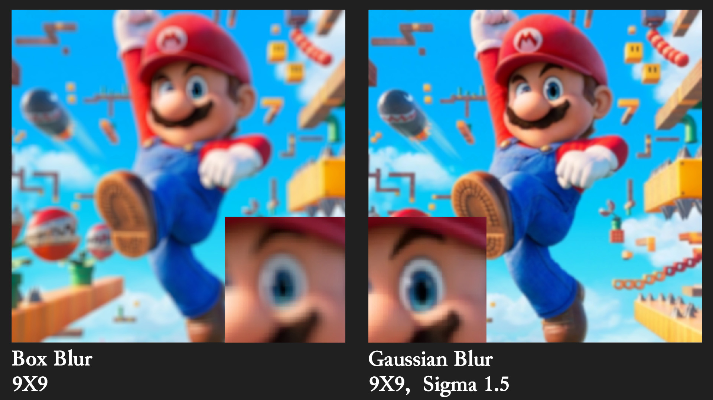
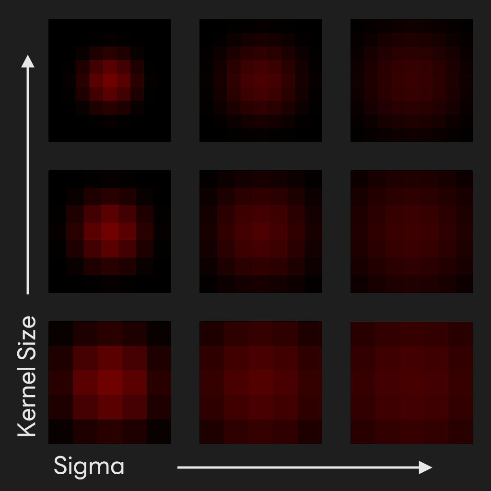

특별히 특정 blur가 더 좋다고 하긴 힘들지만 두 블러의 차이점은 명확하다.
Box Blur는 더 뿌옇고 그대신 성능면에서 더 유리하고 Gaussian blur의 경우 더 선명하지만 그만큼 더 많은 성능을 요구한다.
Box Blur는 가중치가 균등하고 Gaussian filter의
가중치는 가운데가 가장 높기 때문에 블러가 제대로 구현된것을 확인해 볼 수 있다.
Gaussian blur를 구현하기 위해서 아래의 공식이 사용되었다.
$$G(x,y) = \frac{1}{2\pi \sigma^2 }e^{-\frac{x^2+y^2}{2\sigma^2}} $$ Hlsl에서 블러의 가중치를 저장하기 위해서 weightData[][]와 같이 다차원 배열을 사용해봤으나 성능적인 문제 때문인지 계속 오류가 떠서 진행을 할 수 없었다. 결국 찾아낸 방법은 c#에서 gaussian blur의 정규화된 가중치를 구한다음 그 값을 텍스쳐에 저장시키는 방법이었다. 아래는 가중치가 저장된 텍스쳐들을 비교하기 위해 모아둔 것이다.

RFloat 텍스쳐 포맷을 사용하였기 때문에 텍스쳐는 R채널 값만 보이게 된다. 가로축은 sigma 값이 점차 증가하면서 가운데에 집중되었던 가중치가 고르게 분포되는 것을 볼 수 있다. 세로축은 kernel 사이즈의 변화를 보여주며 커질수록 참고하는 주변 픽셀의 범위가 넓어지는 것을 볼 수 있다. 두 개의 값이 모두 커질 수록 블러의 강도가 세진다는 것을 확인할 수 있었다.
기본 방법을 쓰기보다 게임에서는 더 최적화된 방법을 사용하는 것같다. 그 중 가장 대중적인 방법은 가로와 세로축의 픽셀만 참고하고 대각선 부분을 포기하는 방식이다. 즉, 다중 루프가 사용될 필요가 없다. 특별히 선명한 블러이미지가 필요한 것이 아니라면 다운 샘플링한 이미지를 가로 세로축만 사용한 블러필터를 이용한것이 가장 효율적인 것으로 생각된다.
△